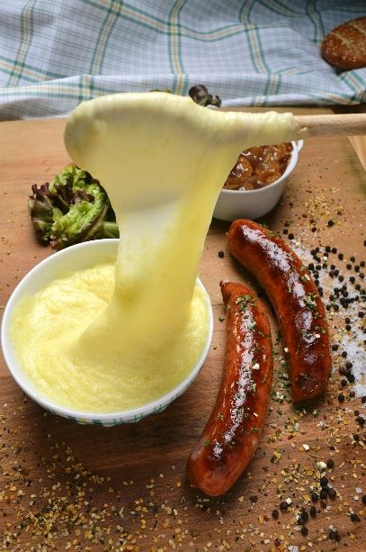
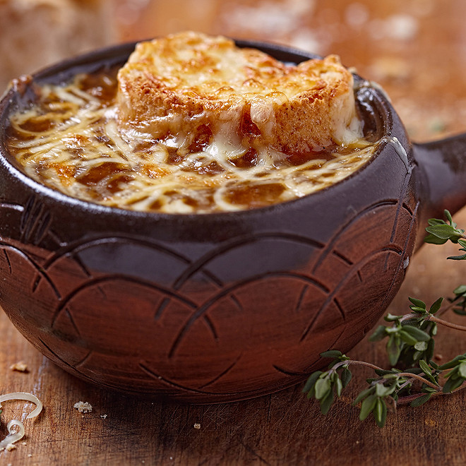
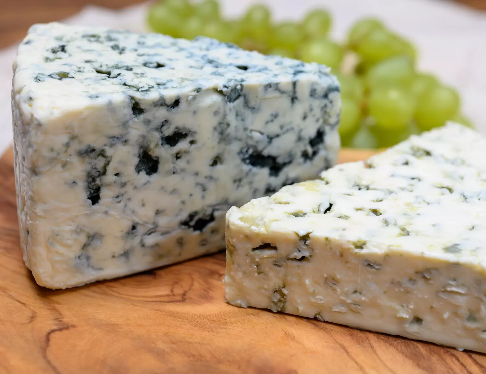
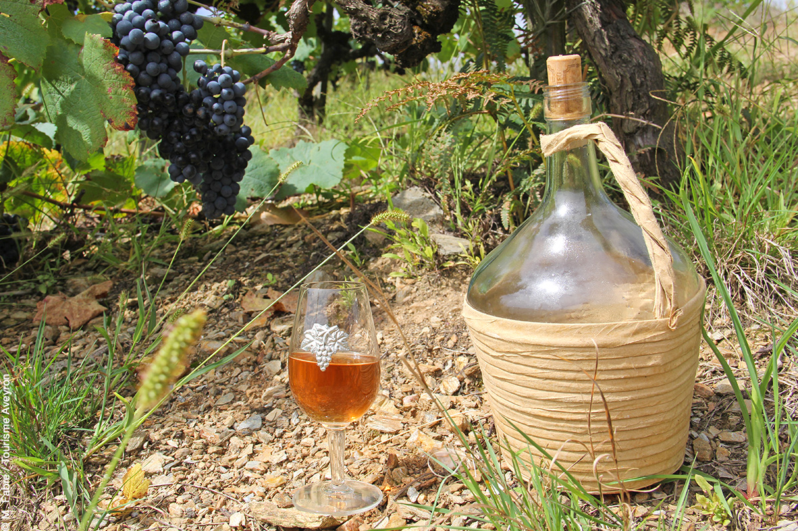
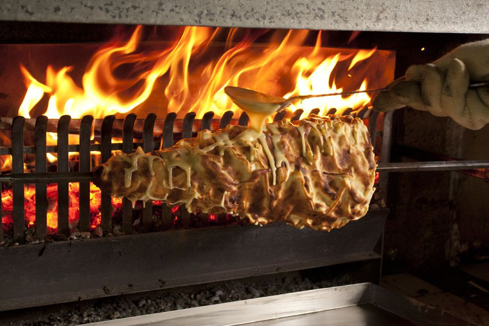
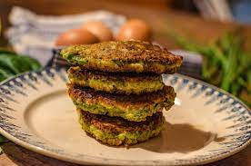
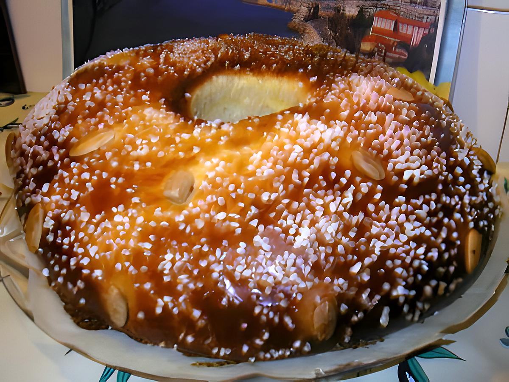
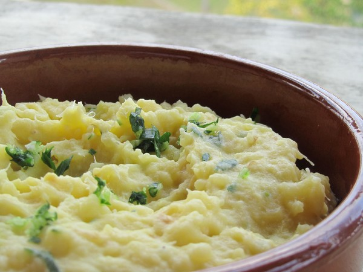

L'Aligot
L'aligot est un mélange onctueux de purée de pommes de terre, de fromage et d'ail, le tout étiré jusqu'à obtenir une texture filante et délicieusement crémeuse. Ce plat réconfortant et savoureux est souvent servi en accompagnement de viandes, telles que la saucisse ou l'agneau, et est apprécié pour sa richesse en saveurs et sa texture unique.
La soupe au fromage
La soupe au fromage, un délice réconfortant, alliant crémeux du fromage et richesse d'un bouillon savoureux. Parsemée d'oignons caramélisés ou de croûtons dorés, elle offre une explosion de saveurs rustiques. Simple et sophistiquée, elle régale les amateurs de fromage et de cuisine traditionnelle.
Le Roquefort
Le Roquefort, icône du monde du fromage, offre une texture crémeuse et des veines bleues pour des saveurs intenses. Parfait seul ou en cuisine sophistiquée, il marque les papilles. Le roi des fromages pour les amateurs de sensations fortes gustatives.
Le Ratafia
Le Ratafia, trésor méconnu, mêle moût de raisin et eau-de-vie pour une expérience sensorielle unique. En apéritif, dessert ou cuisine, il révèle une richesse incomparable. Symbole d'élégance française, il invite à savourer la vie avec délice.
Le Gâteau à la Broche
Le gâteau à la broche, merveille culinaire, offre des couches dorées et moelleuses pour un goût incomparable. Chaque tranche invite à un voyage gustatif, mêlant saveurs riches du beurre et du sucre avec subtile touche de vanille. Symbole de tradition et de convivialité dans les montagnes françaises.
Les Farçous
Les Farcous sont des galettes à base de pâte à crêpe, farcies de verdure : épinards, blettes, ou herbes sauvages. Dorés, ils offrent une texture croustillante à l'extérieur et moelleuse à l'intérieur. Servis chauds ou froids, ils révèlent des saveurs simples et authentiques.
La Fouace
La fouace, trésor du Sud de la France, est un pain brioché parfumé à la fleur d'oranger, zeste d'orange ou citron, parfois avec des fruits secs. Texture moelleuse et parfum envoûtant, délicieuse à tout moment de la journée.
L'Estofinado
L'estofinado, trésor culinaire du Sud, est une symphonie de saveurs rustiques. À base de morue séchée, pommes de terre, ail et persil, il évoque les plaisirs simples de la vie à la campagne. Servi chaud ou froid, chaque bouchée transporte les papilles dans un voyage au cœur des traditions culinaires du Sud-Ouest.